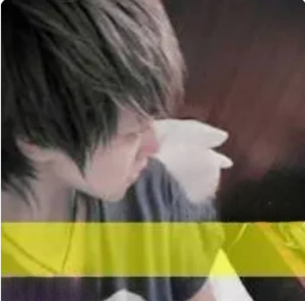

关于我
我的头像1
这是我最早的QQ头像，小学3年级用的，到至今！
现在大三，在自学前端，现在在看 Web 入门 - MDN 教程,2023年计划：
- 不在混日子，天天玩！
- 暑假找份前端工作
- 攒点钱
- 多写些东西
- ......
2022年12月27日 星期二 这周计划
- 把 Web教程-MDN 看完，学完Javascript
- Hexo博客整理整理 我的博客 喜欢上一个人.fun
- 。。。。。。
这是我最早的QQ头像，小学3年级用的，到至今！
现在大三，在自学前端，现在在看 Web 入门 - MDN 教程,2023年计划：
2022年12月27日 星期二 这周计划